WunderLINQ connects a phone or tablet to WunderLINQ hardware and presents motorcycle data in a high-contrast interface designed for a mounted device. Configure the app while parked and use the handlebar controller for routine operation.
Mount the phone securely, then power on the motorcycle and WunderLINQ.
Open WunderLINQ and complete the first-run setup. Grant permissions for the features you plan to use.
Select a nearby device whose name begins with WunderLINQ and accept the operating-system pairing request.
Wait for the connection control at the top of the app to read CONNECTED.
Open Data or Dashboard and verify that expected motorcycle values update.
Set your Navigation app, Roadbook app, units, display options, and Quick Tasks before riding.
Screenshots in this guide were captured from the current Android release on a Pixel 10 Pro XL configured with a WunderLINQ X and a two-channel PowerLINQ. Live connection state, motorcycle values, colors, installed apps, and available channels will differ.
First start and pairing
The setup wizard explains each permission before the operating system asks for it. Optional permissions may be declined, but related features remain unavailable until the permission is enabled in system settings.
Permission or action
Feature enabled
Bluetooth
Scanning, pairing, reconnecting, and live WunderLINQ data
Location and background location
Navigation, weather, waypoints, and trip routes while the screen is off
Motion and fitness on iOS
Phone lean-angle graphs and g-force
Notifications
Ride alerts and recording status
Camera and microphone
Photos and video with sound
Photo library on iOS
Saving photos and video
Contacts and phone on Android
Contact selection and calls
Media access on Android
Metadata and control for the active media player
Selected music app on iOS
Music metadata and commands for Apple Music or Spotify
Pair WunderLINQ
After permissions, the app checks for an existing paired WunderLINQ. If none is found, it scans for nearby devices whose names begin with WunderLINQ. Select the correct unit and confirm the Android or iOS pairing prompt. Use Scan again if the unit is not listed.
Connection control
The top-right control reads CONNECT when disconnected and CONNECTED after the BLE session is ready. Tap CONNECT to retry manually. The app attempts to reconnect to paired WunderLINQ hardware automatically. Android also keeps the BLE service active with a persistent notification.
Before riding
Verify CONNECTED appears and live values change.
Confirm the selected navigation and music apps are installed.
Test calls, camera tasks, and accessory remotes while stationary.
Choose a light or dark appearance and brightness suitable for current conditions.
Controls and focus
WunderLINQ is designed for a four-direction handlebar controller with Enter and Escape. Touch remains available for configuration and editing.
Input
Typical action
Left
Previous top-level screen; return from supported Quick Task lists
Right
Next top-level screen; in alphabetic lists, jump to the next starting letter
Up / Down
Move focus through buttons, lists, and Quick Tasks; change Weather Map zoom
Enter
Activate the focused item; on Music, play or pause
Escape
Go back or close the current page without editing Quick Tasks
Touch
Open menus, change settings, enter text, and customize Quick Tasks
Focus indication
Enable Focus indication in App Settings to make handlebar input easy to see. The current item receives the configured highlight color. When the app receives WunderLINQ input messages, the navigation area also indicates active control input. The Bluetooth connection control remains visible.
Long lists
Contact, App Launcher, and Navigate to waypoint lists are sorted for rapid scanning. Press Right to jump to the next initial letter, Left in a Quick Task list to return, and Up or Down to move one focusable row at a time. Contacts without a phone number are omitted.
Portrait, landscape, and tablets
The app supports portrait, landscape, and tablet layouts. In landscape, main navigation becomes a vertical rail on the left. Safe areas keep controls clear of camera cutouts and system navigation. Orientation can be locked in App Settings.
Main screens
The app remembers the last top-level screen and restores it with the matching navigation selection. Optional screens can be enabled or disabled in App Settings.
Select any screenshot to view it full size.
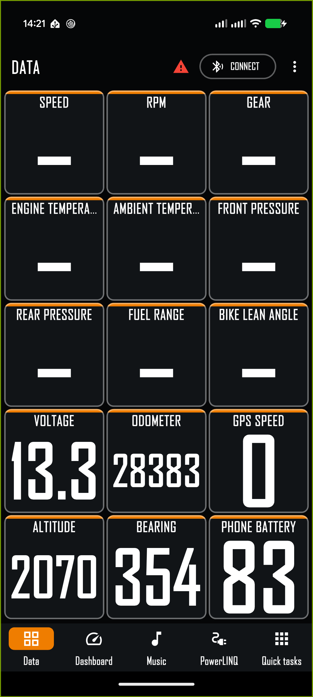
Data fills the screen with configurable live-data cells.
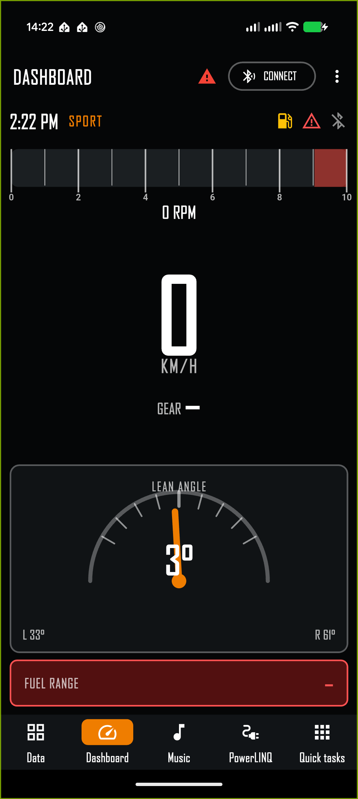
Dashboard combines speed, gear, alerts, and supporting ride values.
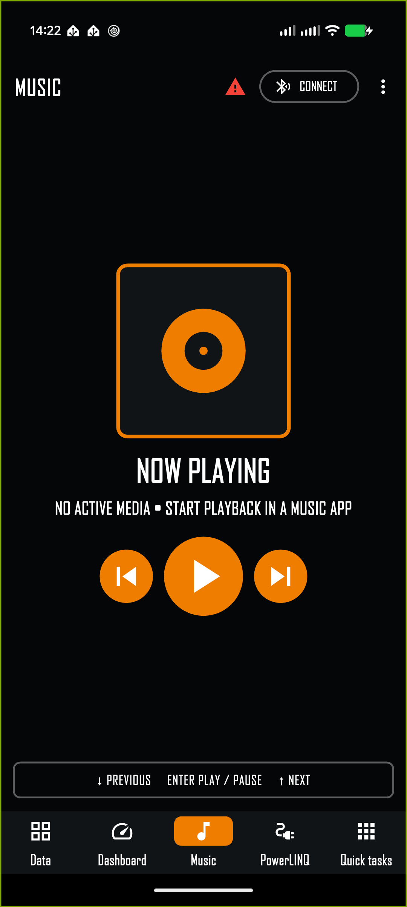
Music shows artwork, metadata, and large transport controls.
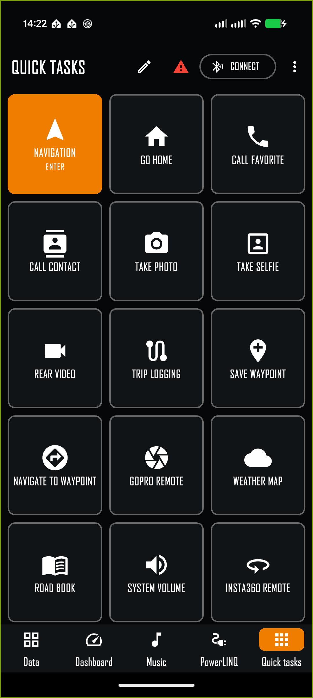
Quick Tasks provides a handlebar-friendly action grid.
Data and Dashboard
Data screen
Data presents large, high-contrast cells. Choose 1, 2, 4, 8, 10, 12, or 15 cells in App Settings. Cells resize to fill the available phone or tablet area. Tap a cell to select its value. Measurement units are hidden by default; enable Display Units in App Settings to show them.
Motorcycle and WunderLINQ
Phone location and sensors
Gear, RPM, speed, rear-wheel speed
GPS speed, altitude, bearing, and elevation change
Engine and ambient temperature
Phone battery and barometric pressure
Front and rear tire pressure
G-force and phone lean angle
Fuel range and consumption
Sunrise and sunset
Odometer, Trip 1, Trip 2, and Trip auto
Time and cardinal or degree bearing
Voltage, throttle, brakes, shifts, and ambient light
Location-dependent values when permission and a fix are available
Bike lean angle when supplied by the motorcycle
Phone lean is used only by dashboard lean graphs, not as a bike-lean fallback
A dash means the source has not supplied a valid value. Some BMW models do not expose every motorcycle field. Phone-derived values require the corresponding sensor or permission.
Dashboard screen
Dashboard prioritizes speed, gear, status icons, and selected supporting values. Choose Standard, Sport, or Adventure in App Settings. Dedicated layouts adapt to portrait, landscape, and tablets.
Choose Motorcycle, Rear wheel, or GPS as the speed source.
Choose 10000, 12000, or 15000 RPM for the tachometer scale.
The Bluetooth icon is blue when connected; warning and fuel indicators reflect current status.
Phone lean-angle graphs account for device orientation. The Bike lean data point remains motorcycle-only.
Music and PowerLINQ
Music metadata, artwork, and transport controls.
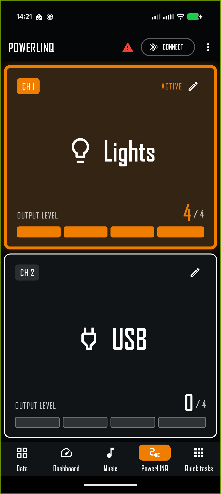
Each reported PowerLINQ channel expands to fill the page and shows its configured name, icon, state, and output level.
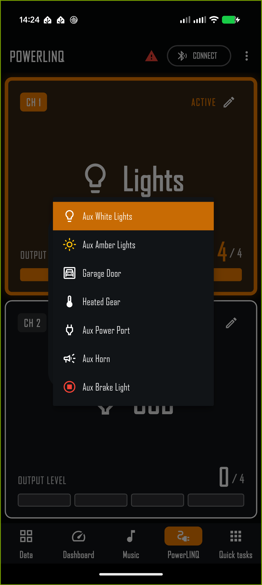
The channel editor provides seven high-contrast accessory icons.
Music
The Music screen displays available album art, track metadata, and previous, play/pause, and next controls. The selected player must be installed and running.
Android: uses the active media session. Grant media access only when requested.
iOS: controls the Music player selected in App Settings: Apple Music or Spotify.
Down selects the previous track, Enter toggles play or pause, and Up selects the next track.
PowerLINQ
Enable Show PowerLINQ screen in App Settings. The attached PowerLINQ reports its channel count, active channel, and output levels from 0 through 4. The active channel uses your configured highlight color. Hardware Settings shows only the number of channels reported by the accessory.
Customize a channel
Tap the pencil on a channel, or long-press the channel card.
Enter a short name that is easy to read while mounted.
Open Icon and choose Aux White Lights, Aux Amber Lights, Garage Door, Heated Gear, Aux Power Port, Aux Horn, or Aux Brake Light.
Select Save. The name and icon are retained for future launches.
The name and icon are display labels only. Configure the channel's electrical behavior and trigger mode separately under Hardware Settings.
Quick Tasks
Quick Tasks place common actions in a large grid. Up and Down snake through the grid and automatically scroll to keep the focused task visible. Only the focused task is highlighted. Enter runs it. Escape returns without opening the editor.
Quick Tasks can contain up to 24 assignments.
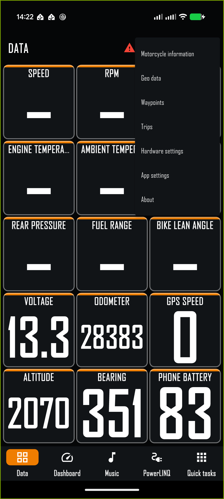
The overflow menu opens records, settings, information, and support.
Customize the grid
Tap the pencil on the Quick Tasks screen. Tap an assignment to replace it, use the arrow controls or drag handle to relocate it, use remove to delete it, or choose Add task. Shortcut tasks support a custom name and URL. On Android, a Shortcut may instead launch an installed app and use that app’s name and icon.
Task
What it does
Navigation
Opens the navigation app selected in App Settings.
Go home
Routes to the Home address saved in App Settings.
Call favorite
Calls the Home phone number saved in App Settings.
Call contact
Opens the alphabetic contact list with available photos. Contacts without phone numbers are hidden.
Take photo / selfie
Captures in the background and saves the image. Optional preview confirms the photo.
Rear / front video
Starts or stops background video capture. A visible indication remains while recording.
Trip logging
Starts logging or stops and saves the active trip. A visible REC indicator remains while logging.
Save waypoint
Saves the current position immediately with a timestamp name and confirmation.
Navigate to waypoint
Opens the alphabetic waypoint list and sends the selection to the chosen navigation app.
Weather map
Shows animated weather, current position, and bearing.
Roadbook
Opens the selected Roadbook app.
System volume
Shows and changes system volume; the display follows hardware volume-button changes.
GoPro / Insta360 remote
Opens the corresponding WunderLINQ companion integration.
Fuel / Faults
Opens motorcycle fuel information or active faults.
App launcher
Android only. Opens an alphabetically paged installed-app list.
Shortcut
Opens a custom URL or iOS Shortcut; Android can optionally launch an installed app.
Weather, photos, and video
Weather Map
Weather Map overlays animated radar on Google Maps. The current-location marker includes an arrow for phone or GPS bearing. Position and bearing refresh every second while the screen is open, and the selected zoom level is retained.
Press Up to zoom in and Down to zoom out within supported limits.
Press Left to return to Quick Tasks.
Pan or pinch with touch while stationary.
Map tiles, weather animation, and position updates require network access and a valid location fix.
Photos and preview
Photo tasks capture without opening a full camera interface. When Photo preview is enabled, the saved photo appears with the correct orientation. The OK button drains from left to right for three seconds and closes automatically; tap it to close sooner. A confirmation appears after a photo saves even when preview is disabled.
Video recording
Front and rear video tasks record in the background on Android and iOS. The app displays a persistent recording indication until the task is used again to stop and save the recording. Microphone permission is required to include audio.
Trips and waypoints
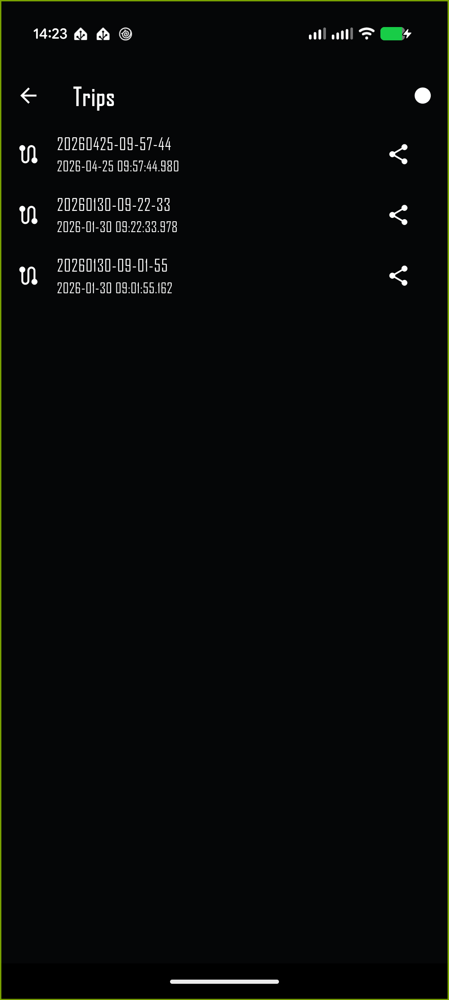
Trips lists saved rides and provides GPX sharing.
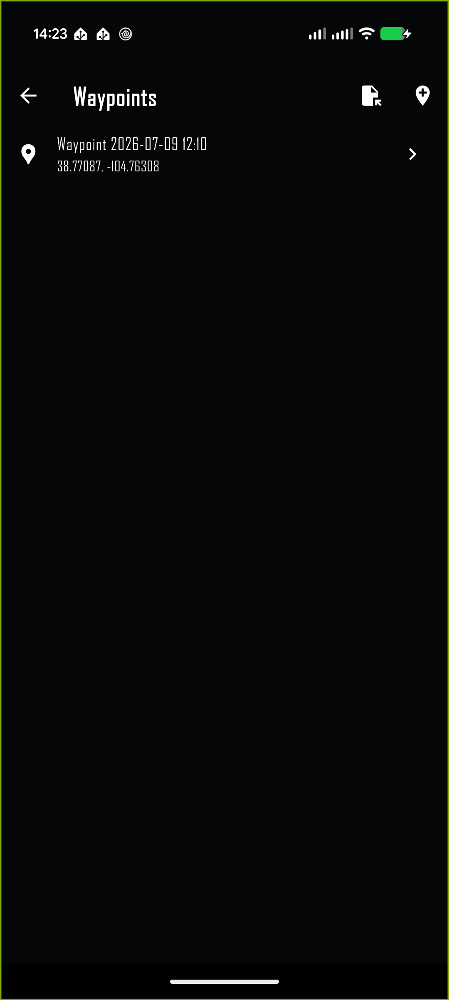
Waypoints supports creation, import, editing, and navigation.
Trip logging
Start logging from the Trip logging Quick Task or the record control on Trips. While active, the app shows a red recording indication in the main header and a TRIP LOGGING ACTIVE banner on the Trips page. Stop with the same task or control to save the ride.
Each sample stores location with all available motorcycle and phone telemetry—not only the values currently visible in the grid. This includes fields such as speed, RPM, gear, temperatures, tire pressures, fuel data, voltage, lean, g-force, bearing, barometric pressure, altitude, phone battery, and platform-specific signal data when a source is available.
Trip detail shows the route on Google Maps, distance, duration, average and maximum speed, elevation gain and loss, and an elevation graph. Rename or delete the trip from its detail page. Share the route as GPX or full telemetry as CSV.
Waypoints
Save waypoint records the current location immediately with a timestamp name. The Waypoints page can create, import, open, edit, and delete waypoints. The add/edit map supports zooming, panning, and dragging the pointer. Map previews are cached after loading.
Navigate to waypoint sorts entries alphabetically. Press Right to page to the next letter and Left to return to Quick Tasks. Selecting an entry uses the configured navigation app’s supported URL. If an app cannot perform the requested route or point action, WunderLINQ tells you instead of failing silently.
Upgrading from an earlier WunderLINQ app: the new app uses the same application identity. On first launch after an in-place upgrade, it imports compatible legacy waypoints and trips into the new store while preserving the originals.
App Settings
Open the overflow menu and select App settings. Changes take effect without leaving and reopening the page.
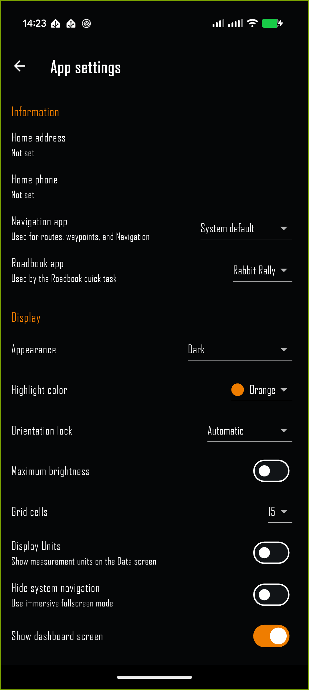
Apps, appearance, screens, units, alerts, and advanced behavior.
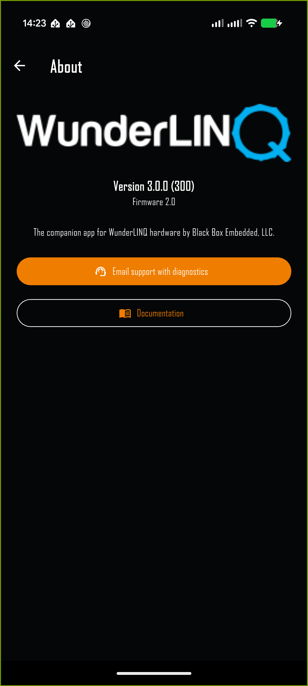
About displays version details and provides support diagnostics.
Group
Settings
Information
Home address, Home phone, Navigation app, Roadbook app, and iOS Music player
Display
Appearance, automatic night delay on Android, highlight color, orientation lock, brightness, grid cells, optional Data-screen units, immersive navigation, optional screens, dashboard style, speed source, and maximum RPM
Units
Distance, speed, temperature, pressure, fuel consumption, bearing, time format, and contact sorting
Alerts and automation
Notifications, TPMS, fuel, ignition, Android auto launch, automatic trip logging, photo preview, focus indication, and low-pressure threshold
Advanced
Android picture in picture, GPS-bearing override, PiP orientation and grid size, and debug logging
Navigation, Roadbook, and music
App lists are sorted alphabetically. WunderLINQ uses the selected navigation app’s supported launch URL when opening it or sending a destination. Navigation apps vary: some support point display but not automatic route start. On iOS, the selected music app must be installed and running for reliable metadata and control.
Alerts
Notifications may report low tire pressure, fuel state, ignition state, faults, and recording activity. A specific TPMS or fault event is not resent repeatedly while unchanged. Choose the tire threshold in the same unit selected under Pressure.
Hardware Settings
Open the overflow menu and select Hardware settings while connected. The page identifies the WunderLINQ model and firmware and loads its editable configuration. Use Refresh configuration if values are missing or stale. The VIN is not displayed.
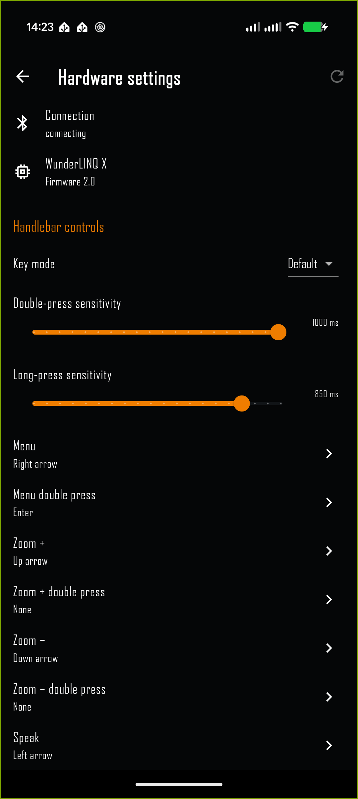
Connected model, firmware, key mappings, and accessory configuration.PowerLINQ controls adapt to the reported channel count.
Handlebar mapping
Choose a key mode and edit supported handlebar actions. A mapping can send keyboard or media-consumer keys. Modifier selection supports multiple simultaneous modifiers. Use labeled dropdowns rather than hexadecimal input. Save to WunderLINQ writes the configuration; Factory defaults restores model defaults before saving.
PowerLINQ configuration
One setting appears for each channel reported by the accessory: two-channel hardware shows two rows and four-channel hardware shows four. Modes include Toggle, Momentary, Ignition, High beam, Brakes, Ambient light, Ambient temperature, Heated grip level, and Disabled. These modes determine channel behavior; the name and icon selected on the PowerLINQ screen identify what the channel controls.
Cluster reset and time
Cluster reset commands are visible only with WunderLINQ N or WunderLINQ X. Depending on hardware support, they reset average speed, fuel economy, and trip counters. While connected to N or X, the app updates cluster date and time every second.
Android and iOS features
Android
A foreground BLE service and persistent notification aid reconnect and permitted background work.
Auto launch can open WunderLINQ when Android detects paired hardware.
A telemetry home-screen widget and configurable data-grid picture in picture are available.
Navigation, Roadbook, and App Launcher can open adjacent when the device is already in split-screen mode and the target supports it.
Android Auto provides a driving-appropriate interface where supported.
iOS
Choose Apple Music or Spotify; the selected app must be installed and running.
Add WunderLINQ Telemetry from the widget gallery for glanceable data.
iOS reserves system picture in picture for video playback, so Android-style data-grid PiP is unavailable.
CarPlay presents supported WunderLINQ driving functions where available.
Android-style automatic app launch is unavailable, so its setting is hidden.
Deep links and external apps
WunderLINQ supports callback links used by navigation and companion apps. A bare wunderlinq:// URL returns to the app and retains the current screen.
URL
Destination
wunderlinq://data or wunderlinq://datagrid
Data
wunderlinq://dashboard
Dashboard
wunderlinq://music
Music
wunderlinq://powerlinq
PowerLINQ
wunderlinq://quicktasks
Quick Tasks
A Shortcut Quick Task may open another application URL. On iOS, enter the URL for an installed Shortcut or app. On Android, enter a URL or select an installed application.
Motorcycle and Geo information
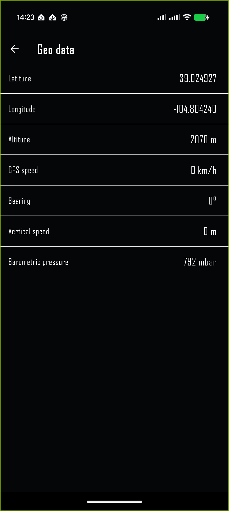
Coordinates, altitude, GPS speed, bearing, and phone sensor data.
Motorcycle information provides values such as ignition, odometer, service information, fuel range, voltage, shift and brake counts, and recorded maximum bike lean when supplied. Geo data provides current coordinates, altitude, GPS speed, bearing, vertical speed, and barometric pressure. A dash means the required source is unavailable.
Troubleshooting
Symptom
What to check
WunderLINQ does not connect
Power the motorcycle and hardware, confirm Bluetooth is enabled, verify the paired name begins with WunderLINQ, tap CONNECT, and restart Bluetooth if necessary.
Pairing does not complete
Select the device again and accept the system pairing prompt. On Android, open Bluetooth settings if offered. Remove a stale pairing only if you intend to pair again.
Data cells show a dash
Confirm the motorcycle supplies that field. Check Location and Motion permissions, then wait for a GPS fix where applicable.
Music metadata or art is missing
Start playback in the selected player. On Android, grant media access. On iOS, verify the selected Apple Music or Spotify app is running.
Map tiles or weather are missing
Check network access, location permission, and the location fix. Reopen the map after connectivity returns.
Photo or video does not save
Enable Camera, Microphone for video audio, and iOS photo-library access. Confirm storage is available.
Calls do not start
Enable Contacts and Android Phone permission. Confirm the selected contact contains a phone number.
The app feels sluggish while connected
Close unnecessary background apps, allow WunderLINQ background operation, and verify the BLE signal is strong.
Hardware Settings are empty
Remain connected, tap Refresh configuration, and wait for model and firmware information.
PowerLINQ channel count is wrong
Wait for live accessory status. The app updates to the channel count reported by the attached unit.
Support and safe use
Support diagnostics
Open About from the overflow menu and choose Email support with diagnostics. The generated message includes app, operating system, device, hardware version, firmware, permissions, settings, and diagnostic logs. It excludes VIN, BLE payloads, speed, RPM, gear, location, and active faults.
If the app cannot create the email, note the app version and firmware shown on About and attach a description of what happened, what screen was open, and whether CONNECTED was visible.
Safe use
Complete pairing, app selection, Quick Task customization, and text entry before riding.
Use the handlebar controller only when conditions permit and keep attention on traffic and the road.
Do not use camera, calling, mapping, or configuration features where prohibited.
Mount the device securely without blocking vehicle controls, instruments, or your view.
Available values and integrations depend on the WunderLINQ and PowerLINQ models, motorcycle, operating system, installed apps, permissions, and regional service availability.